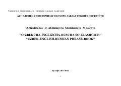

OSO'zbek, ingliz va rus tillaridagi kundalik muloqot uchun mo'ljallangan amaliy so'zlashgich.
Ushbu qo'llanma o'zbek, ingliz va rus tillaridagi eng zarur kundalik iboralarni o'z ichiga olgan 26 ta mavzuiy bo'limdan iborat. Kitob sayyohlar, talabalar va xorijiy tillarni o'rganayotgan keng kitobxonlar ommasi uchun mo'ljallangan bo'lib, inglizcha iboralarning o'qilishi lotin alifbosida berilgan.